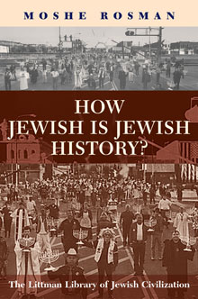

How Jewish is Jewish History?
Moshe Rosman
Joint winner of the 2010 Jordan Schnitzer Book Award for Early Modern and Modern Jewish History
Moshe Rosman presents a cogent and critical argument for the considerations that must be brought to bear on the writing of Jewish history today. By highlighting in one book the issues raised by postmodernism, How Jewish is Jewish History? considers the questions that Jewish historians must confront if their work is to be taken seriously by mainstream intellectuals, or indeed by educated Jews interested in understanding their own cultural and historical past.
More info
Joint winner of the 2010 Jordan Schnitzer Book Award for Early Modern and Modern Jewish History
With great vigour and from the vantage point of long experience of writing and teaching Jewish history, Moshe Rosman treats the key questions that postmodernism raises for the writing of Jewish history. What is the relationship between Jewish culture and history and those of the non-Jews among whom Jews live? Can we—in the light of postmodernist thought—speak of a continuous, coherent Jewish People, with a distinct culture and history? What in fact is Jewish cultural history, and how can it be written? How does gender transform the Jewish historical narrative? How does Jewish history fit into the multicultural paradigm? Has Jewish history entered a postmodern phase? How can Jewish history utilize the methodologies of other disciplines to accomplish its task? All these are questions that Jewish historians need to think about if their work is to be taken seriously by mainstream historians and intellectuals, or indeed by educated Jews interested in understanding their own cultural and historical past.
While engaging with the questions raised by postmodernists, the author adopts a critical stance towards their work. His basic claim is that it is possible to incorporate, judiciously, postmodern innovations into historical scholarship that is still based on documentary research and critical analysis. The resulting endeavor might be termed ‘a reformed positivism’.
Rosman presents a concentrated, coherent, cogent argument as to what considerations must be brought to bear on the writing of Jewish history today. By highlighting in one book the issues raised by postmodernism, How Jewish is Jewish History? provides those in the field with a foundation from which to discuss how it should be practiced in light of this generation’s challenges. It is a valuable resource for students of Jewish history and historiography and a handy tool for scholars who must confront the issues aired here in their own more narrowly focused scholarly works.
‘Moshe Rosman is an innovative and independent-minded historian whose work is always fascinating, thoughtful, and well-argued. The subject of his most recent book is one that is much agitating the world of academic Jewish scholarship. I cannot think of a recently published book that I have been more eager to read.’
Todd Endelman, University of Michigan
‘Moshe Rosman is one of the few Jewish historians who can deal with the theoretical issues besetting Jewish historiography, particularly in the light of post-modernist thought. This book sets an agenda that will be discussed for many years hence.’
Shmuel Feiner, Bar Ilan University
About the author
Moshe Rosman is Professor of Jewish History at Bar Ilan University in Israel. He has been a Fulbright-IREX fellow, a fellow of the Hebrew University's Institute for Advanced Studies and the University of Pennsylvania's Katz Center for Advanced Judaic Studies, winner of the National Jewish Book Award (1996, 2009), the Zalman Shazar Prize (2000), the Jerzy Milewski Award (2000), and the Jordan Schnitzer Award (2010), and visiting professor at Yale and other universities. Professor Rosman has conducted extensive archival research in eastern Europe and specializes in integrating Jewish, Polish, and other sources. His previous books include The Lords' Jews: Jews and Magnates in the Polish-Lithuanian Commonwealth and Founder of Hasidism: A Quest for the Historical Ba'al Shem Tov (the second edition of which is published in paperback by the Littman Library). He is one of the principal authors of the forthcoming A New History of Hasidism.
Contents
Preface
Acknowledgements
Note on Transliteration
Introduction: Writing Jewish History in the Postmodern Climate
1 Some a priori Issues in Jewish Historiography
2 The Postmodern Period in Jewish History
3 Hybrid with What? The Relationship between Jewish Culture and Other People’s Cultures
4 The Jewish Contribution to (Multicultural) Civilization
5 Prolegomenon to the Study of Jewish Cultural History
6 Methodological Hybridity: The Art of Jewish Historiography and the Methods of Folklore
7 Jewish Women’s History: First Steps and a False Start—The Case of Jacob Katz
Conclusion: Jewish History and Postmodernity—Challenge and Rapprochement
Bibliography
Index
Reviews
'Moshe Rosman’s How Jewish Is Jewish History is a lucid, engaged, but also dispassionate work certain to become a crucial point of departure for future discussions of fundamental questions facing Jewish studies. It asks, and sets out to offer some answers to the question as to whether historians can maintain the continuity and distinctiveness of the Jewish experience. Rosman sees Jewish historiography as having been altered at its core by postmodernism, and offers an incisive and original “polythetic approach” to this dilemma grounded in a “reformed” positivism. This is a wise, courageous, challenging book, subtle, made of many different parts, all of which are insightful, and likely to be of enduring significance'
from the citation for the 2010 Jordan Schnitzer Book Award
'While addressing the issues raised by postmodernism, Rosman provides a starting point from which to discuss how this generation might tackle these challenges. For students of Jewish history and historiography, this is a most worthwhile read . . . Recommended.'
S. D. Benin, Choice
'Provides clear and insightful expositions of some central contemporary theoretical and methodological issues as they relate to some crucial themes in Jewish history in particular. It provides a learned and highly articulate defence of a pragmatic, moderate, and 'centrist' position by one of the influential practitioners of Jewish history writing . . . a highly valuable attempt to confront some of the major challenges posed by recent innovations from a firm position and in a coherent way. What is more, this collection has much to contribute to the definition of a badly needed common ground between supporters and opponents of postmodernism and thereby helps to diffuse much of the unpleasant polemic that has often surrounded the emergence of postmodern critiques.'
Ferenc Laczó, European Journal of Jewish Studies
'His brief, incisive, and welcome conversation with contemporary Jewish historiography will be of inordinate use to the perplexed of our time.' Steven Bowman, H-Judaic
'Both thought-provoking and entertaining . . . thoroughly engaging and makes one ponder deeply on the basic issues of Jewish historiography. It should be read by all Jewish historians whether they are contemplating writing a grand narrative or a micro-study.'
John Cooper, Jewish Historical Studies
'He presents a comprehensive work in English on the problems and challenges of writing Jewish history under the impact of postmodern ideas and multiculturalism, forwhich he deserves credit . . . The book's strong points include its extensive bibliography and excellent documentation.'
Rivkah Duker Fishman, Jewish Political Studies Review
'Excellent . . . it is a most important and essential book for anyone interested in Jewish affairs. It is an overview of how academic theories of modernism are changing and have changed perceptions. It is a vital analysis of how many different approaches to Jewish history there are . . . Rosman raises all the fascinating issues.'
Jeremy Rosen, The Jewish Press
'Cogently written, remarkably combining depth of analysis with clear, straightforward writing . . . Rosman has confronted the sharpest challenges for Jewish historiography laid down by contemporary modes of thinking.'
Michael A. Meyer, Jewish Quarterly Review
‘Rosman reviews the newest developments in Jewish historiography in the context of the historical theoretical debates of postmodern and postcolonial studies. In particular, he focuses on the definition of “self” and “other” in Jewish culture and history and on the relationship between them.’
Ekaterina Emeliantseva, Osteuropa
'Absolutely essential reading for any student thinking of writing a thesis or even a serious paper on Jewish history. It is a profound analysis of what the academic study of Jewish history is and what should be taken into consideration in setting out to do research in the field. Rosman asks penetrating questions regarding the possibility of objective study of Jewish history in the light of the issues raised by postmodernist thinking and he sensitively explores ways of dealing with these questions. He applies his wide and perceptive reading in general historiography to clarify the challenge of new modes of historical thought to students of Jewish history. His mastery of the Jewish past, especially but not only of Jewish life in eastern Europe, keeps the discussion from being purely theoretical . . . While Rosman deals with complex issues, his writing is lucid and his examples are fascinating. There is nothing like this book on the market and it is therefore a crucial introduction for students. While Rosman's examples are drawn from the context of Jewish history, the issues he raises apply to the historiography of other religious and cultural groups. Therefore, while this brilliant book should be required reading for all serious students of Jewish studies, it should be equally interesting to students of other traditions.'
Shaul Stampfer, Religious Studies Review
'Rosman's erudite volume ranges over more theoretical ground than can be explained in a brief review . . . a useful introduction to the heat that history and historiographical disputes generate in contemporary Israel.'
Michael C. Hickey, Shofar
'Incisive.'
Nils Roemer, Studies in Contemporary Jewry
'Rosman helps us understand how history has become, in the hands of postmodern awareness, more complicated, less unitary, and still deeply fascinating . . . an important entry in an important debate over the understanding of our multiple pasts in the complex present.'
David Wolpe, Tablet Magazine

234 pages
ISBN: 978-1-904113-34-8
£14.95 / $24.95
Publication October 2008
Other books by this author:

Rethinking European Jewish History
Jeremy Cohen & Moshe Rosman

Founder of Hasidism
A Quest for the Historical Ba'al Shem Tov